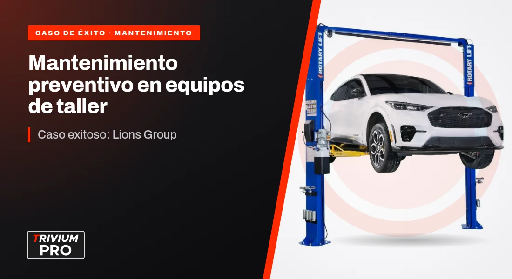

Introducción
En el competitivo mundo de los servicios automotrices, la eficiencia operativa y la confiabilidad de los equipos son factores determinantes para el éxito. Hoy queremos compartir una experiencia reciente que ejemplifica perfectamente la importancia del mantenimiento preventivo: nuestra visita técnica a Lions Group Bosch Car Service en Canning.
La Visita Técnica
Lions Group Bosch Car Service es reconocido por su excelencia en servicios automotrices, y parte de su éxito se debe a la inversión en equipamiento de primera calidad. Durante nuestra visita, realizamos una revisión técnica especializada de su balanceadora, además de inspeccionar otros equipos clave de su operación.
Equipos en Funcionamiento
En las instalaciones de Lions Group pudimos verificar el estado óptimo de varios de nuestros equipos:
Alineadora Geoliner 630: Este equipo de alta precisión continúa brindando mediciones exactas, fundamental para garantizar la seguridad y el rendimiento de los vehículos atendidos. Su tecnología avanzada permite diagnósticos rápidos y precisos.
Elevador de Dos Columnas Rotary Lift: La seguridad es primordial en cualquier taller, y este elevador ha demostrado su confiabilidad día tras día. Su diseño robusto y sistemas de seguridad integrados proporcionan tranquilidad tanto a los técnicos como a los clientes.
Balanceadora: La revisión técnica de este equipo confirmó su excelente estado de funcionamiento, garantizando balanceados precisos que se traducen en mejor experiencia de manejo para los usuarios finales.


Beneficios del Mantenimiento Preventivo
Esta experiencia refuerza varios puntos clave:
- Productividad sostenida: Equipos bien mantenidos significan menos tiempo de inactividad
- Calidad consistente: Los servicios mantienen sus estándares de excelencia
- Inversión protegida: El mantenimiento adecuado extiende la vida útil de los equipos
- Confianza del cliente: La confiabilidad operativa se traduce en satisfacción del usuario final
Conclusión
La visita a Lions Group Bosch Car Service Canning nos recordó por qué el mantenimiento preventivo no es solo una recomendación, sino una necesidad estratégica. Ver nuestros equipos funcionando óptimamente en un taller de esta categoría confirma que la inversión en calidad y mantenimiento siempre da sus frutos.
Para talleres que buscan maximizar su eficiencia operativa, la combinación de equipamiento de calidad y mantenimiento preventivo regular es la fórmula del éxito.